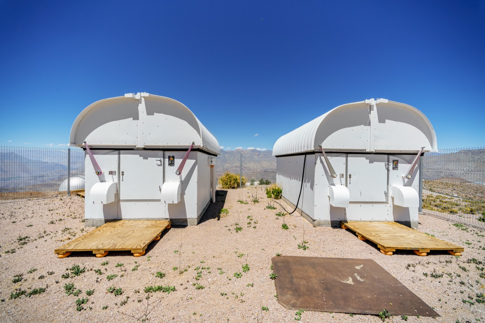
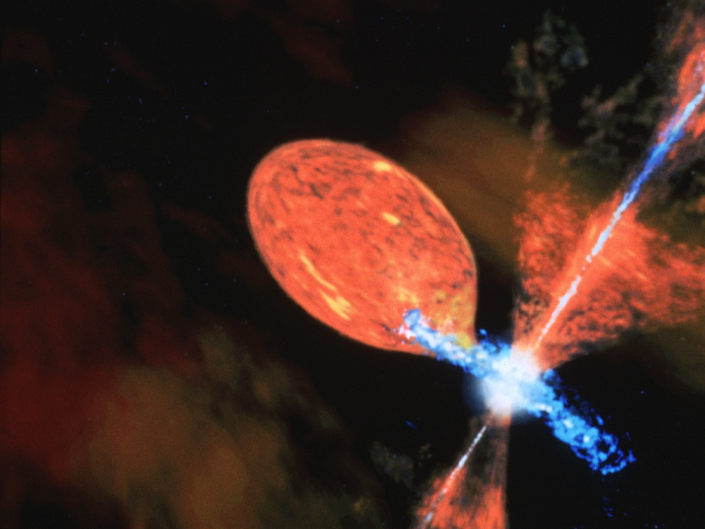

Executive Summary
8월 24일 arXiv에 올라온 논문 한 편이 주기 변광성 373,646개에서 이상 천체 24개를 추려냈다. ASAS-SN 관측망이 쌓아 둔 카탈로그이고, 저자는 체코 카렐대와 오하이오주립대 연구진이다. 24개 중 18개는 선행 문헌에 특이한 별로 보고된 적이 없다. 광도곡선을 실제로 들여다본 것은 사람이 아니라 멀티모달 에이전트였고, 그 분량은 전체의 약 1%였다.
발견 목록보다 눈길이 가는 것은 그 옆에 붙은 예산 계산이다. 연구진은 라벨링 예산 5,100개를 초기 이상치 순위대로만 썼을 경우를 따로 계산했다. 그랬다면 최종 카탈로그 177개 중 53개, 약 30%만 손에 들어왔다. 가장 낮게 랭크된 이상 천체는 초기 순위 35만 위 언저리에 있었고, 그 자리까지 순서대로 내려가려면 예산이 70배는 있어야 했다.
데이터 실무자에게 이 논문은 천문학 이야기로만 읽히지 않는다. 무엇을 먼저 라벨링할 것인가라는 선택이 모델 성능이 아니라 발견 자체의 범위를 정한 사례다. 검수를 사람이 아닌 에이전트가 맡았을 때 그 판정을 무엇으로 감사할 것인지에도 논문은 답을 하나 내놓는다.
주요 수치
출처: Pešta & Ting (2026), arXiv:2608.23688 초록 및 4·5절
5,100개
실제로 라벨링한 별
전체 373,646개의 약 1%
3시간 · $40
파이프라인 전체 소요
51회 반복과 5인 합의검수 포함
30%
초기 순위만 따랐을 때 회수율
같은 예산으로 177개 중 53개
70배
최하위 이상 천체까지 필요한 예산
초기 순위 약 35만 위에 놓여 있었다
37만 개 중 5,100개만 봤다
변광성 카탈로그에서 특이한 별을 골라내는 일은 오래도록 눈의 몫이었다. 밝기가 시간에 따라 어떻게 오르내리는지 그린 광도곡선을 사람이 한 장씩 넘겨 보며 이상한 것을 집어내는 방식이다. 그림 몇천 장이면 해볼 만하지만, 관측망이 자동으로 쌓는 카탈로그는 이미 수십만 장 단위다.
자동 이상탐지를 걸면 되지 않느냐는 반문에는 논문이 서두에서 먼저 답해 둔다. Etsebeth 등(2024) 연구진이 은하 이미지 400만 장에 isolation forest를 돌렸을 때, 상위 2,000개 후보 가운데 1,763개가 장비 아티팩트이거나 마스킹된 영역이었다. 과학적으로 흥미로운 천체는 그 순위 안에 단 하나였다. 이상치를 찾는 알고리즘은 이상한 데이터도 함께 찾아내고, 둘을 갈라내는 일이 결국 사람 손으로 돌아온다.
Milan Pešta와 Yuan-Sen Ting은 그 일감을 멀티모달 에이전트에게 넘겼다. 대상은 ASAS-SN 스카이패트롤 V2.0에서 VSX 변광성 목록과 교차한 뒤 관측 횟수와 밝기 범위로 품질 컷을 통과한 주기 변광성 373,646개다. 검수를 맡은 모델은 Gemini 3 Flash이고, 에이전트가 받은 것은 위상접기한 광도곡선 그림과 주기·밝기 범위·VSX 카탈로그 분류명이 전부다. 별 이름도 하늘의 좌표도 주지 않았고, 카탈로그 분류명조차 그림을 보고 동의하지 않으면 에이전트가 자기 판단으로 덮어쓰도록 했다.

51회 반복이 끝났을 때 라벨이 붙은 별은 5,100개, 전체의 약 1%다. 걸린 시간은 약 3시간, API 비용은 약 40달러다. 결과는 이상 천체 24개와 후속 관측이 필요한 관심 후보 153개이며, 이상 천체 24개 중 18개는 지금까지 특이 천체로 보고된 적이 없는 별이다.
같은 일을 사람이 했다면 며칠이 걸렸을지는 논문이 세지 않았다. 저자들이 정량으로 비교한 대상은 사람이 아니라 다른 기계, 정확히는 라벨링 없이 이상치 점수만으로 순위를 매기는 통상적인 방식이다. 그 비교가 이 논문에서 가장 실무적인 숫자를 만들어 냈다.
라벨을 붙일 때마다 순위가 바뀐다
파이프라인의 출발점은 숫자가 아니라 그림이다. 각 별의 광도곡선을 주기에 맞춰 접어 518×518 픽셀 이미지로 그리되 축과 눈금은 지웠다. 곡선의 모양만 남긴 이 그림을 DINOv2 ViT-g/14에 통과시켜 1,536차원 벡터를 뽑는다. 천문 데이터로 파인튜닝한 적 없는 범용 비전 모델인데도, 임베딩 공간에서 변광성 종류별로 곡선이 갈라져 놓였다.
그다음이 초기 순위다. VSX 분류 중 멤버가 1,000개 넘는 26개 클래스와 나머지를 한데 묶은 1개, 모두 27개 그룹마다 isolation forest를 따로 학습시켜 별마다 이상치 점수를 매겼다. 클래스를 무시하고 하나로 학습시키면 희귀한 클래스가 통째로 이상치로 뽑혀 나온다. 흔한 것과 이상한 것을 가르는 기준을 클래스 안쪽으로 옮긴 설계다.
여기서부터 루프가 돈다. 매 회 순위 상위 100개를 에이전트가 한 건씩 독립적으로 평가해 0(무관), 1(관심 후보), 2(이상)의 라벨을 붙인다. 그 라벨은 임베딩 공간에서 코사인 유사도 0.90을 넘는 이웃에게 전파되어 다음 회차의 순위를 바꾼다. 다만 한 회차에서 이웃 전파로 끌어올려진 후보가 배치의 절반을 넘지 않도록 상한을 걸어 뒀다. 이미 찾은 이상 천체 주변만 파고들다 새 영역을 통째로 놓치는 것을 막기 위해서다. 사람이 붙인 라벨로 랭커를 갱신하는 액티브러닝의 고전적 구조인데, 라벨을 붙이는 주체만 바뀌었다.
여기서 말하는 에이전트는 도구를 쓰거나 스스로 계획을 세우는 시스템이 아니다. 논문은 각주에서 자기네 에이전트를 자동 주석자로 동작하는 멀티모달 모델의 독립 인스턴스라고 못 박고, 평가와 평가 사이에 기억도 없고 외부 도구도 없고 행동을 계획할 능력도 없는 최소 설계라고 밝힌다. 판정에 쓸 수 있는 재료는 그림 한 장과 프롬프트뿐이다.
50회를 돌린 뒤 마지막 51회차는 다르게 움직인다. 쌓인 라벨 5,000개로 로지스틱 회귀 분류기를 학습시켜 미라벨 풀 전체를 다시 점수 매기고, 이상 확률이 0.90을 넘는 상위 100개를 추가로 에이전트에게 넘겼다. 유사도 전파는 이미 본 것 근처만 훑기 때문에, 멀리 떨어진 후보를 끌어오려면 전체를 한 번 다시 보는 단계가 필요했다.
순서를 바꾸자 나머지 70%가 보였다
루프를 돌리는 이유는 결국 라벨링 예산이 유한하기 때문이다. 5,100개를 볼 수 있다면 어느 5,100개를 볼 것인가. 가장 흔한 답은 이상치 점수 상위 5,100개다. 연구진은 그 답을 실제로 채점했다. 최종 카탈로그에 오른 별들이 초기 순위에서 몇 등이었는지 되짚어, 순위대로만 예산을 썼을 때 무엇이 손에 들어왔을지를 계산한 것이다.
이상 천체 24개 중 초기 5,100등 안에 있던 것은 10개, 42%다. 관심 후보 153개 중에서는 43개, 28%다. 두 범주를 합치면 177개 중 53개, 약 30%가 된다. 나머지 70%는 순위대로 내려가는 방식으로는 예산이 바닥날 때까지 만나지 못했을 별들이다.
가장 극단적인 사례가 CSS_J163724.5+181022이다. 이 별은 초기 순위에서 35만 위 언저리, 즉 카탈로그 거의 바닥에 놓여 있었다. 순서대로 내려가 이 별에 닿으려면 라벨링 예산이 5,100개가 아니라 70배쯤 있어야 했다. 실제로는 마지막 51회차의 로지스틱 회귀가 이 별을 끌어올렸다. 유사도 전파로는 끝내 닿지 못했고, 누적된 라벨로 전체를 다시 점수 매기는 단계에서야 잡힌 것이다.
그 마지막 한 번이 없었다면 카탈로그는 더 짧았을 것이다. 액티브러닝 50회가 끝난 시점에 최종 이상 천체의 약 71%, 관심 후보의 약 81%가 잡혀 있었고, 나머지는 로지스틱 회귀 단계에서 나왔다. 51회차에서만 이상 천체 7개와 관심 후보 29개가 더 나왔다. 다섯 에이전트가 만장일치로 이상이라 부른 9개 중에도 둘은 초기 예산 밖에 있었다. Y Leo는 6,942위였다가 이웃 라벨 전파로 끌려 올라왔고, CSS_J085817.6−075719는 25만 위에서 마지막 로지스틱 회귀에 잡혔다.
그렇다면 예산을 키우는 것이 답인가 하면, 저자들은 그쪽도 아니라고 본다. 앞서 인용한 은하 이미지 연구에서 라벨을 6,000개 넘게 붙이기 시작하자 이상 천체 수확이 급격히 줄었다는 점을 근거로 든다. 액티브러닝에 필요한 라벨은 대체로 몇천 건 언저리에서 포화하고, 그 뒤로는 같은 표본을 더 파는 것보다 다른 데이터셋으로 옮겨 붙이는 편이 낫다는 것이다. 순서를 고치는 일과 양을 늘리는 일은 같은 문제가 아니다.
여기서 바뀐 것은 모델이 아니다. 임베딩도 isolation forest도 그대로다. 바뀐 것은 라벨링의 순서이고, 그 순서가 발견의 범위를 정했다. 라벨링 예산을 "정확도를 얼마나 살 수 있는가"의 문제로만 보면 이 차이가 보이지 않는다. 같은 예산으로 무엇을 만날 수 있는 자리까지 갈 수 있는가가 함께 걸려 있다.
20년 넘게 폭발 중인 별
찾아낸 24개가 어떤 별들인지도 이 파이프라인의 성격을 말해 준다. 가장 눈에 띄는 것은 ASAS J174600−2321.3이라는 공생성 신성이다. 주기 1011.5일로 백색왜성과 M형 적색거성이 짝을 이루는데, 백색왜성이 완만한 신성 폭발을 일으키는 동안 거성에 주기적으로 가려진다. 2015년에 나온 두 편의 관측 보고가 이 별을 폭발 중인 식쌍성형 공생성 신성으로 지목했고, 그중 나중 것은 평균 밝기가 조금 줄어든 것을 근거로 폭발이 잦아들기 시작했다고 봤다. 거의 10년이 지난 이번 데이터에서 백색왜성은 여전히 폭발 중이다. 폭발이 시작된 때부터 세면 20년이 넘는다. 초록과 결론이 이 별을 그렇게 요약한다.

나머지도 성격이 뚜렷하다. 저자들 자신의 분류로 24개는 극단적으로 깊은 주극소를 가진 식쌍성 10개, 접촉쌍성 7개, RRab형 3개, 세페이드 2개, 깊은 식을 보이는 신성형 변광성 1개, 그리고 앞의 공생성 신성 1개다. 식쌍성 쪽은 주극소에서 밝기가 4.02에서 4.82등급까지 떨어진다. 별빛의 97%에서 99%가 사라지는 깊이다. 접촉쌍성 7개는 주기 0.27일에서 0.46일로 이 종류에서는 평범한데 진폭만 이례적으로 커서, 질량비가 1에 가깝고 경사각이 큰 깊은 접촉 상태로 추정된다. 바깥쪽 임계 로슈로브를 채우기 직전이라면 머지않아 병합할 수도 있어 후속 관측 우선순위가 높다.
24개 중 6개는 이미 문헌에 특이 천체로 기록돼 있던 별이다. 저자들은 이 6개를 실패가 아니라 검증으로 읽는다. 에이전트는 별 이름도 좌표도 받지 못했으니 문헌을 참조할 방법이 없었고, 그런 조건에서 이미 알려진 특이 천체를 다시 집어냈다는 사실이 파이프라인이 제대로 작동했다는 독립적 근거가 된다는 것이다.
에이전트의 판정은 무엇으로 감사하나
검수자가 사람이 아니면 검수 기록의 성격이 달라진다. 사람 라벨러에게는 합의율과 재검수 비율, 오류 유형 분포 같은 익숙한 잣대가 있다. 에이전트에게는 그에 대응하는 표준이 아직 없다. 이 논문이 그 자리에 놓은 것은 세 겹의 장치다.
첫째는 프롬프트 자체의 구조다. 에이전트가 받는 지시문은 1,460단어 분량의 8단계 고정 절차다. 시각 검사에서 시작해 데이터 품질과 위상접기 상태 점검, 진폭 추정, 클래스 분류, 극단치 표시, 점수 부여를 거친 뒤 7단계에서 앞의 판단을 스스로 다시 검토하고 마지막에 구조화된 JSON으로 답한다. 규칙도 보수적으로 걸어 뒀다. 데이터 품질 문제는 있다고 가정하고 명확한 반증이 있을 때만 뒤집으며, 품질과 위상접기 점검을 통과하지 못하면 무조건 0점이다. 관측 아티팩트가 이상 천체로 승격되는 경로를 구조로 막은 셈이다.
둘째는 합의검수다. 단일 에이전트 단계에서 1점 이상을 받은 276개를 서로 독립적인 다섯 에이전트가 다시 평가하고 다수결로 최종 라벨을 정했다. 동률이면 낮은 쪽으로 내린다. 그 결과가 아래 표다.
| 단일 에이전트 판정 | 합의 후 이상 | 합의 후 관심 후보 | 합의 후 무관 |
|---|---|---|---|
| 이상 43개 | 20 | 9 | 14 |
| 관심 후보 233개 | 4 | 144 | 85 |
| 합계 276개 | 24 | 153 | 99 |
276개 중 99개, 36%가 무관으로 내려갔다. 혼자 본 에이전트가 세 건 중 한 건 넘게 과하게 표시했다는 뜻이다. 이 강등 덕분에 최종 이상 표본의 순도는 약 두 배로 올랐고, 여기 든 추가 비용은 전체의 25% 정도였다. 검수를 한 번 더 태우는 값으로는 싼 편이다.
강등이 고르게 일어난 것도 아니다. 클래스별 강등률을 보면 EA형 식쌍성은 0.24로 가장 낮은 반면 EB형 식쌍성은 0.64, 준규칙 변광성은 0.67, 회전 변광성은 0.75였다. 이유도 뚜렷하다. EB형은 대개 접촉쌍성으로 잘못 분류돼 그 좁은 주기·진폭 기준으로 채점되는 바람에 평범한 값이 이상해 보였고, 회전 변광성과 준규칙 변광성은 광도곡선이 원래 지저분해서 진폭을 재거나 품질 문제를 짚기가 어려웠다. 오류가 무작위로 흩어지지 않고 특정 클래스에 몰려 있었다는 뜻이고, 이런 쏠림은 라벨을 한 건씩 들여다봐서는 보이지 않는다.
판단보다 입력이 문제였던 경우도 있다. AQ Ind는 4.34등급짜리 깊은 주극소를 가진 식쌍성인데, 위상 기준점이 임의로 잡히는 바람에 그 식이 그림 양쪽 끝에 성긴 줄 두 개로 잘려 나타났다. 다섯 중 셋이 이것을 데이터 품질 문제로 읽어 0점을 줬다. RW Tri는 프롬프트의 분류 목록에 신성형 항목이 아예 없어서 에이전트들이 왜성신성으로 밀어 넣었다. 그림을 어떤 기준점으로 그리고 선택지를 어떻게 적어 주느냐가 판정에 그대로 실려 들어온다.
셋째가 기록이다. 다섯 에이전트가 각각 어떤 근거로 그렇게 판단했는지 추론 과정을 전부 남겼고, 판정 간 표준편차는 신뢰도 지표로 함께 썼다. 논문은 이 설계를 두고 모든 라벨링 결정이 완전히 감사 가능하도록 보장했다고 적는다. 부록에서는 판정별로 등장한 어휘를 세어, 이상 판정에는 exceeding이 91.7%, 무관 강등에는 quality가 78.8%와 standard가 72.7%로 몰려 있음을 보인다. 에이전트가 올린 진단 플래그도 같은 선을 따라 갈린다. 최종 이상 천체 24개는 전부 진폭 극단 플래그가 붙었고 품질 문제 플래그는 하나도 없었던 반면, 강등된 99개에서는 품질 문제가 56.6%, 이상치 과다가 51.5% 올라왔다. 남긴 말과 남긴 플래그가 같은 방향을 가리키는지 사후에 대조할 수 있게 만든 장치다.
다만 이 세 겹으로 막을 수 있는 것은 과잉 표시뿐이다. 합의검수는 단일 에이전트 단계에서 한 번도 표시되지 않은 별을 되살리지 못한다. 저자들도 순도가 아니라 완전성이 목표라면 약한 에이전트 다섯보다 강한 에이전트 하나가 필요할 수 있다고 적고, 37만 개 가운데 끝내 놓친 이상 천체가 몇 개인지는 이 논문도 알지 못한다고 인정한다. 기록이 남지 않은 판정은 감사할 방법이 없다.
라벨링 예산을 어디에 먼저 쓸지가 모델 성능이 아니라 발견의 범위를 정한다. 그리고 검수자가 에이전트라면 품질 관리의 대상은 판정값에서 판정을 남기는 방식으로 옮겨간다. 저자들은 이 파이프라인이 실험실 규모에 머무르지 않는다고 본다. 하룻밤에 100만에서 1,000만 건의 경보가 쏟아지는 LSST 스트림에서도 라벨링 예산 1만 건 수준이면 하룻밤 100달러 미만으로 같은 구조를 돌릴 수 있다는 계산을 함께 실었다. 카탈로그와 코드는 깃허브에 공개돼 있다.